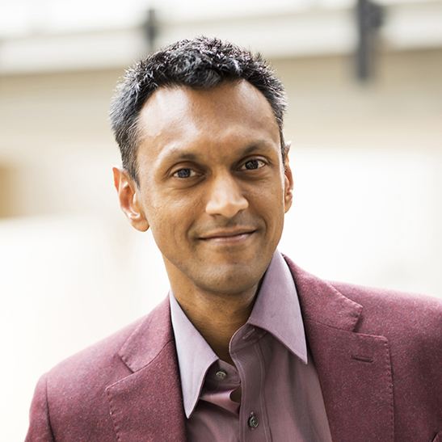
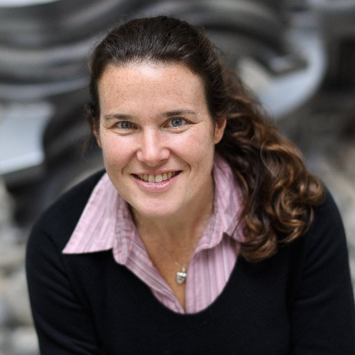
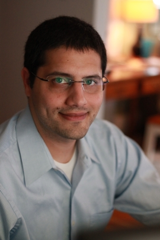
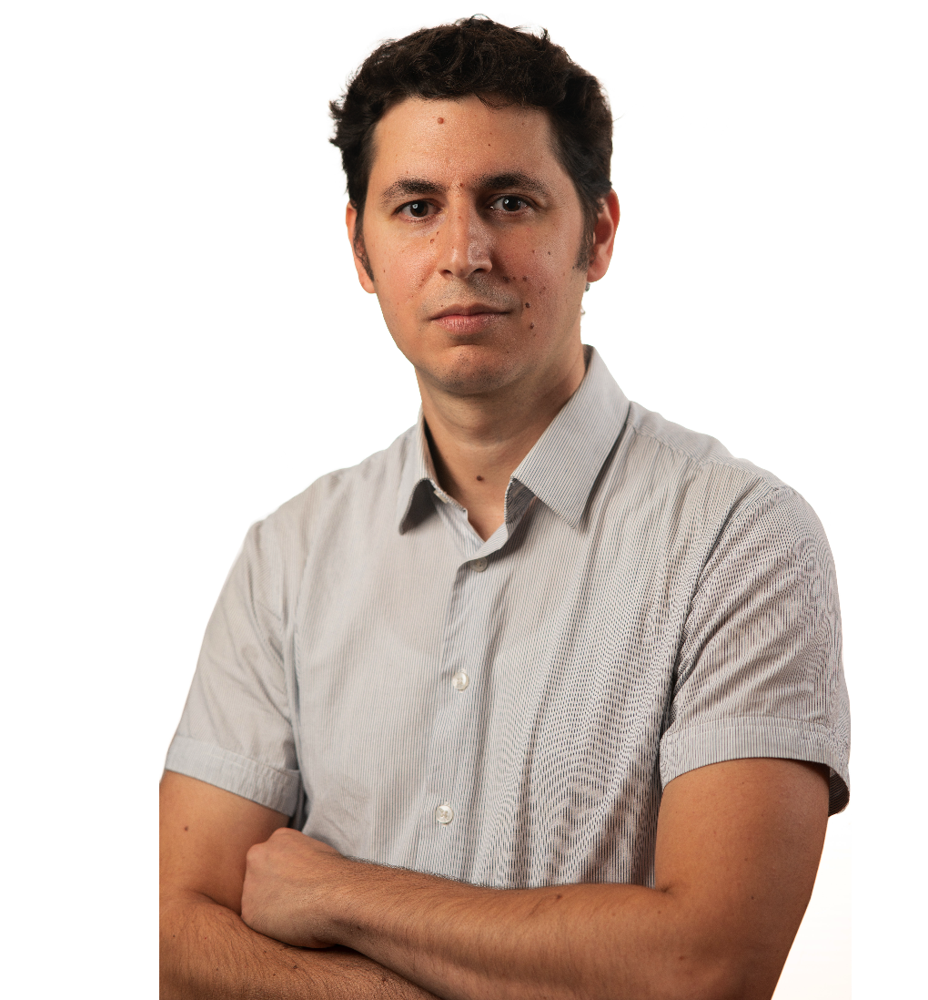
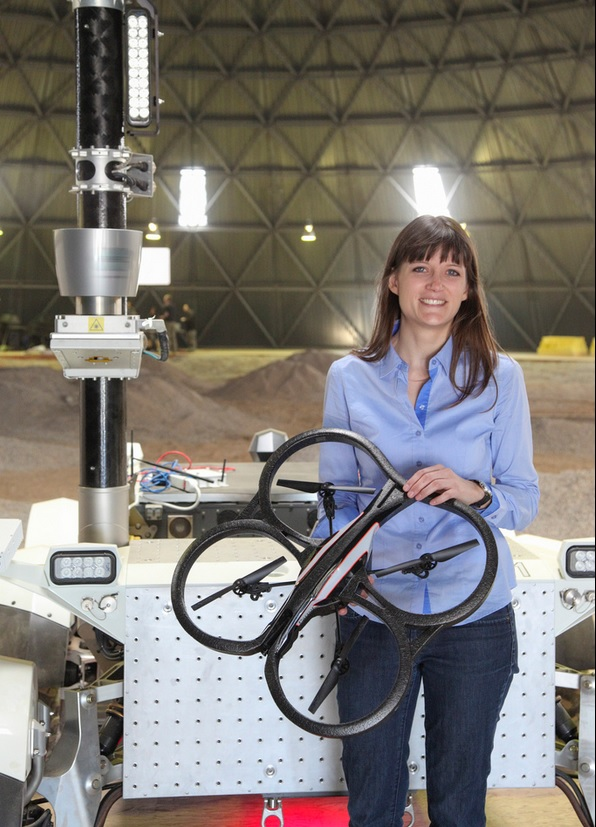

Panel Questions: You can submit questions for the live panel discussion using this Google form.
Invited Speakers
|  | Sham Kakade is a professor in the Department of Computer Science and the Department of Statistics at the University of Washington. He works on the mathematical foundations of machine learning and AI. Sham's thesis helped in laying the statistical foundations of reinforcement learning. He is the recipient of the ICML Test of Time Award (2020). |
|  | Barbara E. Engelhardt is a professor in the Computer Science Department at the Princeton University. As a faculty member, she received the NIH NHGRI K99/R00 Pathway to Independence Award, a Sloan Faculty Fellowship, and an NSF CAREER Award. Her research interests involve developing statistical models and methods for the analysis of high-dimensional biomedical data, with a goal of understanding the underlying biological mechanisms of complex phenotypes and human disease. |
 |
Minmin Chen is a research scientist in Google Research, Brain Team, where she leads a team on applied reinforcement learning for real-world recommender systems such as YouTube. Previously, she was a research scientist at Criteo Lab, building computational models for online advertising, and Amazon, working on the Amazon Go project. |
|  | Philip S. Thomas is an assistant professor and co-director of the Autonomous Learning Lab at UMass Amherst. He studies ways to ensure the safety of AI systems, with emphases on ensuring the safety and fairness of ML algorithms and on creating safe and practical reinforcement learning algorithms. |
|  | Aviv Tamar is an assistant professor at Technion – Israel Institute for Technology. Aviv's research focuses on reinforcement learning, representation learning, and robotics. His work has been recognized by a NeurIPS Best Paper award, a Google Faculty Award, and the Alon fellowship for young researchers. |
|  | Angela Schoellig is an associate professor at the University of Toronto Institute for Aerospace Studies and a Faculty Member of the Vector Institute for AI. She holds a Canada Research Chair in ML for Robotics and Control and a Canada CIFAR Chair in AI. Her goal is to enhance the performance, safety, and autonomy of robots by enabling them to learn from past experiments and from each other. |